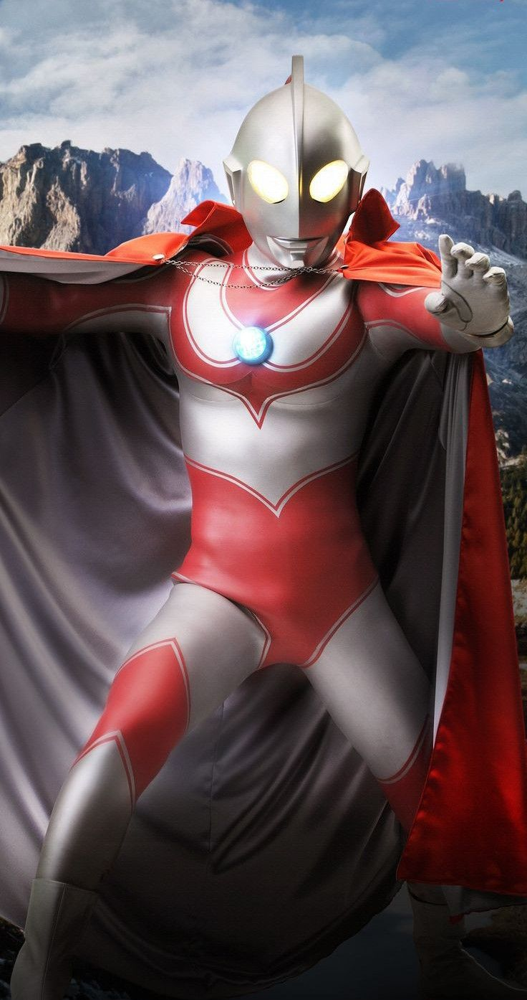

About Jack
Often referred to as the "Returning Ultraman," Ultraman Jack arrived on Earth to defend the planet against a surge of ancient monsters and alien invaders. After witnessing the heroic sacrifice of race car driver Hideki Go, who died saving a young boy and a dog, Jack merged his life force with Go to revive him. As a member of the Monster Attack Team (MAT), Jack is distinguished by his dual-stripe red pattern and his versatile Ultra Bracelet, a multi-purpose weapon gifted to him by Ultra Seven that can transform into a shield, a lance, or a powerful energy blade.